Details to be announced
Data and platform
The event will use a large hospital dataset and an AWS-based platform. The specific dataset, available variables, access requirements and preparation instructions will be announced.
24–25 January 2027 · New Delhi · In person
Clinical questions. Shared expertise. Hands-on health data science.
Two days for medical and data science/engineering participants to work together on clinical questions using a large hospital dataset and an AWS-based platform.
Hosted by
The idea
A datathon is a short, hands-on event where people with different expertise work together on questions using a shared dataset. In a medical datathon, clinicians contribute knowledge of patient care and clinical decisions, while data scientists and engineers contribute methods for working with data. Teams define a question, investigate it and present what they learned.
India Datathon puts clinical reasoning and collaboration at the center of the work. Teams will question what the data represent, what they leave out and whether an analysis addresses a useful clinical problem.
An event result is a starting point for further investigation. Teams should explain what their findings can support and what would need validation before use in patient care.
The journey matters more than a polished end product: how your team questions the data, learns across disciplines and explains its decisions.
Teams use these to shape a focused question within the available data.
Connect the question to a decision a clinician or care team can influence.
Choose a focused question that the available data and two working days can support.
Explain why either a positive or a negative finding would be useful.
Make the cohort, methods and reasoning clear enough for someone else to follow.
Match the scope to the team’s skills, the available variables and the time.
The event will use a large hospital dataset and an AWS-based platform. The specific dataset, available variables, access requirements and preparation instructions will be announced.
Specific clinical tracks will be announced. Teams will use the five guardrails to shape focused questions within the available data.
Generative AI use is encouraged. The LLMathon will help teams compare AI responses, question their reliability and decide what counts as evidence. Teams remain responsible for the reasoning behind their work.
The two-day program
One continuous buildathon, from the first team conversation to the final presentation. Teams work on the same clinical question throughout; concepts are introduced along the way and applied as the project develops.
Meet your team, examine the data, define a question and begin the work.
Day 1 · Sunday, 24 January 2027
Check-in and participant introductions
Welcome, objectives and expected outputs
Questioning AI, comparing answers and framing the team’s problem
Break
Dataset, AWS environment and tools introduced
Clinical question framing and hypothesis generation
Lunch break
Exploratory analysis, data quality and a baseline approach
Break
Interim check-in: the question, findings and help needed
Analysis or prototype development
Team next steps and unresolved blockers
Refine the analysis, review it with mentors, and present the findings and reasoning.
Day 2 · Monday, 25 January 2027
Arrival and technical support
Restart briefing and priorities
Analysis, internal checks and prototype refinement
Break
Interim check-in: parallel team reviews
Health AI Systems Thinking & Governance: From Clinical Question to Responsible Use
Lunch break
Apply systems thinking and governance; prepare the team presentation
Final presentation preparation and break
Five-minute team presentations and discussion
Judges’ deliberation, faculty reflections and participant feedback
Awards for the top three teams, acknowledgements and closing
Schedule subject to confirmation. Session leads and detailed tracks will be announced. Meals will be provided.
People & perspectives
Clinical practice, research and technical expertise. Open a biography below, or select a linked name to visit a LinkedIn or profile page.
Leo Anthony Celi directs MIT Critical Data. His work brings clinicians and data scientists together to study routinely collected health data and improve the way clinical evidence is developed.
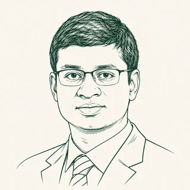
Mayo Clinic
Anirban Bhattacharyya is a critical care specialist at Mayo Clinic in Florida. His interests include the development and application of artificial intelligence in intensive care and mentoring trainees in clinical research.
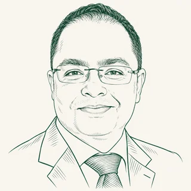
Apollo Hospitals
Sujoy Kar is Chief Medical Information Officer at Apollo Hospitals. His work includes clinical artificial intelligence, digital health and the adoption of data-informed approaches in health care.
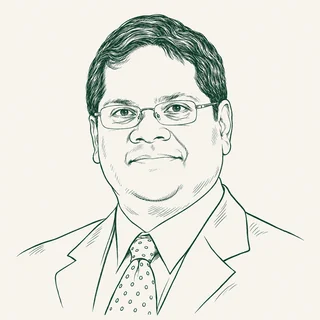
Cleveland Clinic / BrainX
Piyush Mathur is an anesthesiologist and intensivist at Cleveland Clinic and a founder of BrainX. His work spans clinical care, quality improvement and applications of artificial intelligence in health care.
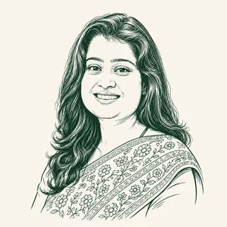
AIIMS, New Delhi
Sulagna Bhattacharjee is a faculty member in anaesthesiology, pain medicine and critical care at AIIMS, New Delhi.
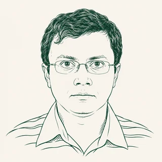
VMMC & Safdarjung Hospital
Anirban Hom Choudhuri is Director Professor and Head of Critical Care Medicine at Vardhman Mahavir Medical College & Safdarjung Hospital, New Delhi. His research examines septic shock, ICU-acquired infections and outcomes in critically ill patients, including studies using routinely collected clinical data. His published work also addresses antimicrobial resistance and end-of-life care in the ICU.
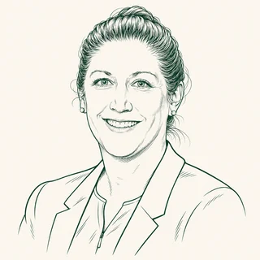
Mayo Clinic
Terri L. Menser is a health services researcher at Mayo Clinic. She studies practice improvement, patient outcomes, health disparities and the implementation of interventions and health information technology.
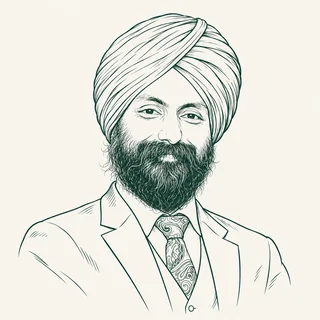
IIIT-Delhi
Tavpritesh Sethi is Professor of Computational Biology and founding head of the Center of Excellence in Healthcare at IIIT-Delhi. His work connects medicine and computation, including clinical decision support and machine learning for critical care and community health.
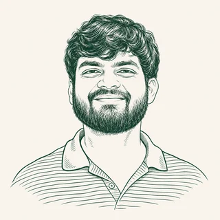
Ashoka University
Mayank Garg is a physician-scientist and Simons-Ashoka Early Career Fellow at Ashoka University. His work connects clinical questions, experimental research and health data science.
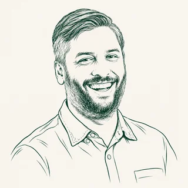
National University of Singapore
Swapnil Mishra is an Assistant Professor at the NUS Saw Swee Hock School of Public Health, with a joint appointment at the NUS Institute of Data Science. His research combines global health, machine learning and Bayesian modelling.
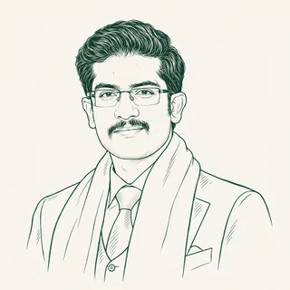
Dure Technologies / Terablu Climate Technologies / Eldric Group
Vinayak Mathur is Envoy, Special Projects at Dure Technologies and a board member of Terablu Climate Technologies and Eldric Group.
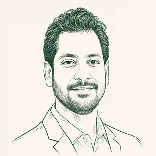
Capital One
Amit Agarwal is a Research Manager at Capital One, where he works on AI safety.
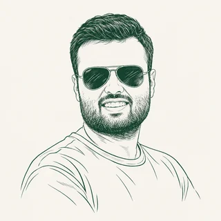
Cloudphysician.AI
Pushkar Shukla works on AI safety at Cloudphysician.AI. His research interests include fairness, computer vision and interpretability, with work on bias detection and mitigation, counterfactual causal analysis and safety evaluations.
National University of Singapore
Mengling (Mornin) Feng is an Associate Professor at the NUS Saw Swee Hock School of Public Health, with appointments in Biomedical Engineering and the Yong Loo Lin School of Medicine at the National University of Singapore. He leads Group Mornin for Healthcare AI, and his work focuses on machine learning and artificial intelligence for health care.
Institutional affiliations do not imply sponsorship. Portraits are AI-generated illustrations based on profile photographs.
Bring your perspective
Students and professionals from medical and data science/engineering backgrounds can apply. We aim to bring together about 80 participants, with an even split between the two backgrounds.
No coding experience is required. Bring your understanding of clinical decisions, patient care and how a hospital actually works. Help your team ask questions that matter.
No coding required
You should know Python (preferred), R or SQL. Bring your skills in working with data and help your team investigate its clinical question carefully.
Python (preferred), R or SQL
Come curious and ready to work together. Ask questions, share what you know and be open to learning from people with different expertise.
Registration opens in the second half of December 2026. The exact date will be announced on this page.
Students and professionals apply on their own, not as a ready-made team.
Organizers will form teams with a balanced mix of clinical knowledge and technical skills.
Two days in person, ending with a five-minute team presentation.
The fee amount and specific dataset will be announced. Teams own the code they create. Any publication or continued data access after the event must be arranged separately by the participants involved.
Participation form
Apply individually when registration opens. These are the questions the form will ask, so you can have your details ready.
Sponsors & partners
Sponsor and partner announcements are on the way.
The event brings together about 80 students and professionals from medical and data science/engineering backgrounds for two days of hands-on work on clinical questions.
Sponsorship contact details will be added once confirmed.
Hosted by
Sponsors & partners
To be announced
Meet us in Delhi
Hosted by Apollo Hospitals
Indraprastha Apollo Hospitals
Sarita Vihar, Delhi–Mathura RoadGate, floor, arrival directions and accessibility contact will be announced.
Questions
24–25 January 2027, at Indraprastha Apollo Hospitals in New Delhi. The event is in person only. Both days finish at 6:00 PM IST.
A short, collaborative event where people with different expertise investigate questions using a shared dataset. At India Datathon, clinical and technical participants work together to frame a useful clinical question, examine the data and explain what their findings can support.
Approximately 80, with an even split between medical and data science/engineering backgrounds.
A large hospital dataset and an AWS-based platform. The specific dataset is to be announced. Access requirements and preparation instructions will follow.
Specific clinical tracks are to be announced. Questions will follow the five guardrails in About.
Registration opens in the second half of December 2026. The exact date will be announced on this page.
Students and professionals from medical and data science/engineering backgrounds can apply. Medical participants do not need to code. Technical participants should know Python (preferred), R or SQL. Bring curiosity and a willingness to work with and learn from teammates with different expertise.
Yes, apply as an individual. Organizers will form teams with a balanced mix of clinical knowledge and technical skills.
The fee amount is to be announced.
Please bring a laptop.
Meals will be provided. Participants are responsible for their own travel and accommodation.
Each team will give a five-minute presentation about what it built. Tell the story behind the work: the clinical question, what the data could support, the decisions, disagreements and changes along the way, and how clinical and technical perspectives shaped your approach. The journey and reasoning matter more than a polished end product.
Participants will receive certificates. Prizes will be awarded to the top three teams; prize details will be announced.
Yes. Generative AI use is encouraged. The LLMathon will help teams compare AI responses, question their reliability and decide what counts as evidence. Teams remain responsible for the reasoning behind their work.
Teams own the code they create. Any publication or continued data access after the event must be arranged separately by the participants involved.
Stay in the loop
Registration opens in the second half of December 2026. Details will be posted on this page.